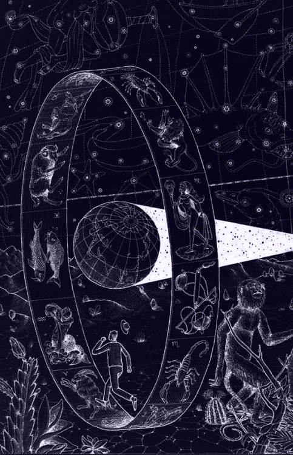

Astrology is the study of the movements and relative positions of celestial objects as a means for divining information about human affairs and terrestrial events. Astrology has been dated to at least the 2nd millennium BCE, and has its roots in calendrical systems used to predict seasonal shifts and to interpret celestial cycles as signs of divine communications. Many cultures have attached importance to astronomical events, and some such as the Indians, Chinese, and Maya - developed elaborate systems for predicting terrestrial events from celestial observations. Western astrology, one of the oldest astrological systems still in Wuse, can trace its roots to 19th-17th century BCE Mesopotamia, from which it spread to Ancient Greece, Rome, the Arab world and eventually Central and Western Europe. Contemporary Western astrology is often associated with systems of horoscopes that purport to explain aspects of a person's personality and predict significant events in their lives based on the positions of celestial objects; the majority of professional astrologers rely on such systems.
